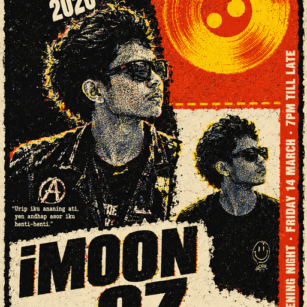

Alur Visual Lab
.
by iMoon07 · sketch canvas
0 nodes · 0 edges
⌂
Home
▤
Docs
⌗
Topology
☺
About
☰
Panel
Tools
Scene
Assets
Layers
Edit
❐
☰
Select
Pan
Box
Diamond
Circle
Arrow
Line
Draw
Text
Table
Sticky
Fill
Lasso
Eraser
Laser
↶
↷
⧉
⎘
⎀
?
☾
☰
⛶
View
−
100%
+
Fit
▦
Keyboard shortcuts
Tools
V
select
H
pan
R
box
D
diamond
O
circle
A
arrow
L
line
P
draw
T
text
9
table
E
eraser
K
laser
Edit
Ctrl
+
Z
undo
Ctrl
+
Shift
+
Z
redo
Ctrl
+
D
duplicate
Ctrl
+
C
copy
Ctrl
+
V
paste
Ctrl
+
A
select all
Delete
delete
Ctrl
+
Enter
edit points
Enter
edit text
Esc
finish editing
Q
keep tool active
Shift
+arrows nudge 10px
Ctrl
+
K
add link
Ctrl
+
Alt
+
C
copy style
Ctrl
+
Alt
+
V
paste style
Arrange
Ctrl
+
Shift
+
]
bring to front
Ctrl
+
Shift
+
[
send to back
Ctrl
+
]
forward
Ctrl
+
[
backward
Ctrl
+
Shift
+
↑
align top
Ctrl
+
Shift
+
↓
align bottom
Ctrl
+
Shift
+
←
align left
Ctrl
+
Shift
+
→
align right
Ctrl
+
Shift
+
<
smaller font
Ctrl
+
Shift
+
>
bigger font
View
Ctrl
+
+
zoom in
Ctrl
+
-
zoom out
Ctrl
+
0
reset zoom
Shift
+
1
zoom to fit
Ctrl
+
'
toggle grid
Ctrl
+
.
focus mode
Space
drag canvas
Ctrl
+
Shift
+
P
command palette
?
this list
Shape
×
↑↓ navigate · Enter run · Esc close
Add box here
Add text here
Paste
Duplicate
Delete
Select all
Zoom to fit
Toggle grid
Exit focus